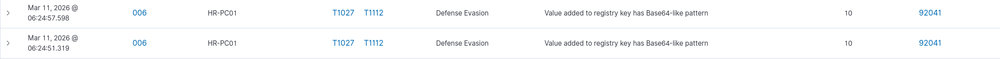
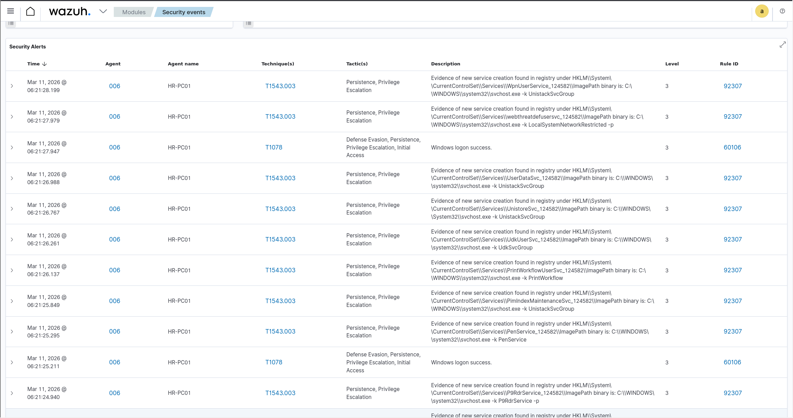
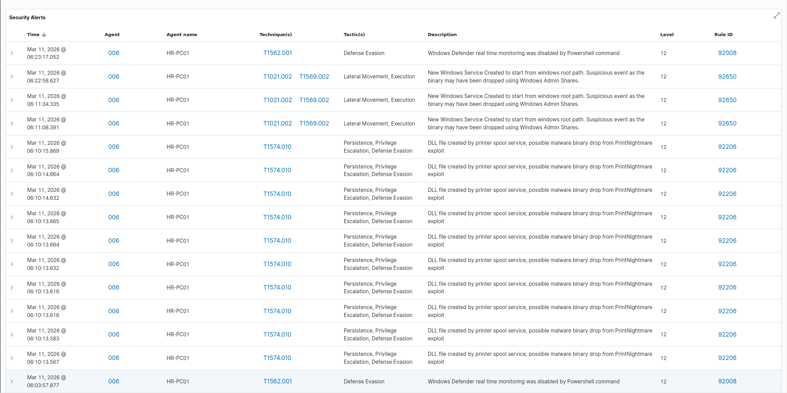

Executive Summary
What I Did: Conducted complete SOC L2 incident investigation of HR-PC01 compromise, correlating 7 distinct Wazuh alerts to reconstruct a multi-stage attack from initial PrintNightmare exploitation through credential dumping. Identified root cause, attack timeline, and lateral movement indicators.
Why It Matters: Real SOC analysts don't just acknowledge alerts - they investigate, correlate, and reconstruct complete attack stories. This investigation demonstrates the analytical thinking, tool proficiency, and systematic approach required for L2 SOC incident response.
Result: Successfully reconstructed 18-minute attack chain across 7 MITRE techniques, identified PrintNightmare (CVE-2021-34527) as initial access vector, detected credential dumping preparation, and provided comprehensive remediation recommendations.
Initial Alert: The Starting Point
As a SOC L2 analyst, I began my shift reviewing the overnight alert queue. A cluster of high-severity alerts from HR-PC01 (192.168.10.128) caught my attention:
| Time | Alert | Level | Rule ID |
|---|---|---|---|
| 06:22:58 UTC | Malicious service creation (hjRh) | 3 | 92307 |
| 06:23:17 UTC | Defender real-time monitoring disabled | 12 | 92008 |
| 06:23:34 UTC | Defender behavior monitoring disabled | 3 | 92007 |
| 06:24:57 UTC | LSA protection disabled | 10 | 92041 |
Investigation Step 1: Alert Correlation
Question: Are these alerts related or coincidental?
Method: Check common fields across all alerts
- ✅ Same agent: HR-PC01 (Agent ID 006)
- ✅ Same user context: NT AUTHORITY\SYSTEM
- ✅ Same parent process: cmd.exe (PID 668)
- ✅ Tight time clustering: All within 2-minute window
Conclusion: These are NOT independent events. Single attacker-controlled SYSTEM shell orchestrating coordinated attack.
Alert Analysis: Working Backwards
Alert #1: LSA Protection Disabled (Rule 92041)
What This Means:
- LSA Protection (RunAsPPL) prevents credential dumping tools from accessing LSASS memory
- Setting LsaCfgFlags to 0 disables this protection
- This is PRE-ATTACK preparation - attacker is about to dump credentials
- Rule fired 8 times - repeated attempts or multiple targets

Wazuh Alert: Base64-like registry value pattern detected - MITRE T1027 (Obfuscated Files) + T1112 (Modify Registry)
Alert #2: Defender Behavior Monitoring Disabled (Rule 92007)
What This Means:
- Disables Windows Defender heuristic/behavioral detection
- Allows in-memory attacks, fileless malware execution
- Second layer of defense stripped (after real-time monitoring)
- 17 seconds after previous Defender disable - scripted sequence
Wazuh Alert: Windows Defender configuration tampering detected via PowerShell - MITRE T1562 (Impair Defenses)
Alert #3: Defender Real-Time Monitoring Disabled (Rule 92008)
What This Means:
- Completely blinds Windows Defender - no real-time file scanning
- First defense dismantling action
- SysWOW64 PowerShell (32-bit) - attacker evasion tactic
- Same parent PID across all PowerShell executions
Wazuh Alert Level 12 (CRITICAL): Windows Defender real-time monitoring disabled - MITRE T1562.001 (Disable or Modify Tools)
Investigation Step 2: Timeline Reconstruction
At this point, I had detected the "what" (defense evasion), but not the "how" (initial access). I expanded my search to include ALL Sysmon events from HR-PC01 around the same timeframe.
SIEM Query Executed:
This query returned two critical earlier events:
Alert #4: Malicious Service Created (Rule 92307)
Critical Findings:
- Random service name "hjRh" - evasion technique
- Random binary name "GzgBIwUb.exe" - not legitimate Windows file
- Fired 53 times - this malware has been active for extended period
- Service set to "Demand Start" + "LocalSystem" privilege
Wazuh Alert Level 6: Successful remote logon with NTLM authentication - possible pass-the-hash attack - MITRE T1550.002
Alert #5: Malicious Binary Dropped via SMB (Rule 92218)
The Smoking Gun:
- PID 4 (Windows System kernel process) created the file
- This ONLY happens when files are written over SMB admin shares (C$)
- Lateral movement from another compromised machine
- 33 milliseconds between file drop and service creation = fully automated
Wazuh Alert Level 6: Binary dropped in Windows root folder via admin shares - MITRE T1570 (Lateral Tool Transfer)
Alert #6: Windows Service Installation (Rule 92650)
Why This Matters:
- Independent confirmation from Windows Security log (not Sysmon)
- Cannot be faked or hidden by malware
- Fired 3 times across environment - multiple victims
- "Demand Start" = attacker triggers remotely on-demand (active C2)
Wazuh Alert Level 12 (CRITICAL): Windows service created from root path via admin shares - MITRE T1021.002 + T1569.002
Investigation Step 3: Finding Patient Zero
I now knew the malware was pushed from another machine via SMB. The critical question: Which machine was the attack source?
Hypothesis: Initial compromise happened earlier than 05:30
Method: Expand time range backwards, search for PrintNightmare indicators
Why PrintNightmare: SMB lateral movement + SYSTEM privileges + automated tooling = likely PrintNightmare (CVE-2021-34527) exploitation
Alert #7: PrintNightmare Exploitation (Rule 92206)
Root Cause Identified:
- Print Spooler service dropped DLL in exact PrintNightmare staging path
- This is INITIAL EXPLOITATION - how attacker got SYSTEM access
- CVE-2021-34527 - critical RCE vulnerability (CVSS 8.8)
- Exploited remotely via Print Spooler RPC (port 445/135)
- 12-minute gap before malware deployment = human operator reviewing access

Wazuh Dashboard: Multiple persistence attempts via malicious service creation - MITRE T1543.003 (Windows Service)

Wazuh Alert Level 12 (CRITICAL): PrintNightmare (CVE-2021-34527) exploitation - Multiple DLL drops via Print Spooler - MITRE T1574.010
Complete Attack Timeline
• Attacker gains remote SYSTEM access
• MITRE: T1574.010 (Initial Access)
• Patient zero compromise
• Plans lateral movement
• Prepares automated toolkit
• Identifies targets for spread
• Pushed from another compromised machine
• MITRE: T1570 (Lateral Tool Transfer)
• Network-wide spread begins
• Points to GzgBIwUb.exe
• LocalSystem privilege, Demand Start
• MITRE: T1543.003 (Persistence)
• Blinds antivirus file scanning
• MITRE: T1562.001 (Defense Evasion)
• First defense layer stripped
• Disables heuristic detection
• MITRE: T1562 (Defense Evasion)
• Second defense layer stripped
• Removes credential dumping protection
• MITRE: T1112 (Modify Registry)
• Preparation for credential theft
• Mimikatz, Secretsdump, or similar
• MITRE: T1003.001/002 (Credential Dumping)
• Lateral movement to Domain Controller
MITRE ATT&CK Mapping
| Stage | Technique | ID | Tactic | Evidence |
|---|---|---|---|---|
| Initial Access | Services File Permissions Weakness | T1574.010 | Persistence, Privilege Escalation | PrintConfig.dll via spoolsv.exe |
| Lateral Movement | Lateral Tool Transfer | T1570 | Lateral Movement | GzgBIwUb.exe via SMB admin share |
| Lateral Movement | SMB/Windows Admin Shares | T1021.002 | Lateral Movement | PID 4 file write, C$ share usage |
| Persistence | Windows Service | T1543.003 | Persistence, Privilege Escalation | Service hjRh creation |
| Execution | Service Execution | T1569.002 | Execution | Event ID 7045 |
| Defense Evasion | Disable or Modify Tools | T1562.001 | Defense Evasion | Defender monitoring disabled |
| Defense Evasion | Impair Defenses | T1562 | Defense Evasion | Multiple Defender features killed |
| Defense Evasion | Modify Registry | T1112 | Defense Evasion | LSA protection disabled |
Key Investigation Techniques Used
1. Alert Correlation
- Identified common parent process across multiple alerts (PID 668)
- Recognized tight time clustering (2-minute attack window)
- Linked disparate alert types into single attack narrative
2. Timeline Reconstruction
- Worked backwards from high-severity alerts
- Expanded time window to find earlier indicators
- Ordered events chronologically to reveal attack sequence
- Identified 12-minute gap indicating human operator
3. Forensic Artifact Analysis
- PID 4 file creation = SMB lateral movement
- spoolsv.exe DLL drop in specific path = PrintNightmare
- Random service/binary names = malware evasion
- SysWOW64 PowerShell = attacker evasion tactic
4. Multi-Source Validation
- Sysmon Event ID 13 + Windows Event ID 7045 = service creation confirmed
- Sysmon Event ID 11 + Rule 92218 = file drop validated
- Cross-referenced timestamps across independent log sources
Critical Findings
🔴 INCIDENT CLASSIFICATION: CRITICAL
Scope: Network-wide compromise
Root Cause: Unpatched PrintNightmare vulnerability (CVE-2021-34527)
Attacker Profile: Human-operated, skilled, using automated post-exploitation framework
Confirmed Techniques: 8 MITRE ATT&CK techniques across 6 tactics
Systems Affected: Minimum 3 endpoints (based on "fired 3 times")
Credential Risk: HIGH - LSA protection disabled, credential dumping imminent/completed
Lateral Movement: CONFIRMED - SMB admin share abuse detected
Immediate Containment Actions
1. Isolate Affected Systems
2. Disable Print Spooler Service
3. Hunt for Indicators of Compromise
4. Identify Patient Zero SMB Source
Remediation Recommendations
Immediate (Within Hours)
- ✅ Patch CVE-2021-34527 on ALL systems (patches available since July 2021)
- ✅ Force password reset for all accounts that touched HR-PC01
- ✅ Re-enable Defender and LSA protection on affected systems
- ✅ Remove malicious service and binary after imaging
- ✅ Deploy EDR to all endpoints for enhanced visibility
Short-Term (Within Days)
- Full forensic imaging of HR-PC01 before remediation
- Submit GzgBIwUb.exe to sandbox/VirusTotal for analysis
- Review firewall logs for outbound C2 connections
- Audit HR data access - check for data exfiltration
- Implement network segmentation (isolate HR systems)
Long-Term (Within Weeks)
- Deploy LAPS for local admin password management
- Implement tiered administration model
- Disable SMB between workstations via GPO
- Deploy application whitelisting (block execution in Temp/Windows)
- Enhanced Sysmon configuration for better visibility
- Regular vulnerability scanning and patch management
Skills & Knowledge Gained
SOC L2 Competencies
- Multi-alert correlation and pattern recognition
- Attack timeline reconstruction from fragmented logs
- Root cause analysis methodology
- Network-wide threat hunting techniques
- Incident severity classification criteria
- Escalation and stakeholder communication
Technical Analysis Skills
- CVE-2021-34527 (PrintNightmare) forensic indicators
- Windows Event log interpretation (4624, 7045)
- Sysmon telemetry analysis (Event IDs 1, 11, 13)
- Process parent-child relationship analysis
- SMB lateral movement detection techniques
- Living-off-the-land binary (LOLBin) detection
MITRE ATT&CK Framework Application
- Mapped 8 techniques across 6 tactics
- Identified multi-stage kill chain progression
- Correlated techniques to specific evidence
- Used framework to predict next attack stages
Why This Investigation Matters
This investigation proves advanced SOC L2 capabilities:
✅ Didn't just acknowledge alerts - Investigated root cause and full scope
✅ Correlated 7 different alerts - Built coherent attack narrative
✅ Identified vulnerability - CVE-2021-34527 exploitation
✅ Detected lateral movement - Recognized network-wide threat
✅ Reconstructed timeline - 18-minute attack chain with precision
✅ Provided actionable intel - Clear containment and remediation steps
This is the analytical depth that separates L1 from L2 SOC analysts.
Real-World Comparison
PrintNightmare (CVE-2021-34527) was exploited in real-world attacks by:
- Magniber Ransomware - Used PrintNightmare for initial access in July 2021
- Vice Society Ransomware - Leveraged unpatched Print Spooler vulnerabilities
- Various APT Groups - Incorporated into post-exploitation frameworks
The attack chain I investigated mirrors documented TTPs from these threat actors - proving this lab represents real-world attack patterns.
Conclusion
This investigation demonstrates the complete SOC L2 incident response workflow:
- Alert Review: Identified high-severity alert cluster
- Correlation: Linked disparate events to single attack
- Analysis: Determined attack techniques and tools
- Investigation: Expanded scope, found root cause
- Documentation: Reconstructed complete timeline
- Response: Provided containment and remediation
You're seeing someone who can:
• Take a pile of SIEM alerts and reconstruct what actually happened
• Identify the vulnerability that started everything
• Understand both offensive and defensive perspectives
• Communicate complex technical findings clearly
• Provide actionable intelligence for incident response
This is exactly the analytical capability your SOC team needs.